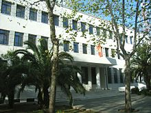
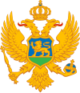

Economy of Montenegro
|  | |
| Currency | Euro (EUR, €) |
|---|---|
| Calendar year | |
Trade organisations | CEFTA, WTO |
Country group |
|
| Statistics | |
| Population | |
| GDP | |
| GDP rank | |
GDP growth | |
GDP per capita | |
GDP per capita rank | |
GDP by sector | Agriculture: 7.5%
|
| 4.3% (2024 est.)[7] | |
Population below poverty line | |
| |
Labour force | |
Labour force by occupation |
|
| Unemployment | |
Average gross salary | €995 / $1053 monthly (August, 2023) |
| €799 / $845 monthly (August, 2023) | |
Main industries | steelmaking, aluminum, agricultural processing, consumer goods, tourism |
| External | |
| Exports | |
Export goods | Copper ore, aluminum, electricity, dried legumes, packaged medicines, lead, scrap iron, lumber |
Main export partners |
|
| Imports | |
Import goods | Refined petroleum, cars, packaged medicines, recreational boats, cigarettes |
Main import partners | |
FDI stock | |
Gross external debt | |
| Public finances | |
| −3.1% (of GDP) (2024 est.):[23] | |
| Revenues | 1.78 billion (2017 est.)[6] |
| Expenses | 2.05 billion (2017 est.)[6] |
| |
All values, unless otherwise stated, are in US dollars. | |
{kind=link}
|  |
| Part of a series on |
| Montenegro |
|---|
| History |
| Geography |
| Politics |
| Economy |
| Society |
The economy of Montenegro is currently in a process of transition, as it navigates the impacts of the Yugoslav Wars, the decline of industry following the dissolution of the Yugoslavia, and economic sanctions imposed by the United Nations. Montenegro joined the World Trade Organization on 29 April 2012.[27] Montenegro joined the North Atlantic Treaty Organization on 5 June 2017.[28]
History
[edit]As a relatively small principality founded in 1852, Montenegro's economy was originally wholly based in agriculture, but it began developing an industrial economy at the turn of the 20th century. Growth was hampered by its small population, lack of raw materials, an underdeveloped transport network, and a comparatively low rate of domestic and international investment.
The first industrial enterprises built in Montenegro were wood mills, an oil refinery, a brewery, salt works, and electric power plants. Economic development was interrupted by several wars, including the First Balkan War (1912–13), World War I (1914–18), and World War II (1939–45). Throughout the first half of the 20th century, agriculture continued to dominate Montenegro's economic activity.
The Yugoslav era
[edit]Montenegro's economy was developed significantly after World War II, as the country was integrated into the Socialist Federal Republic of Yugoslavia and experienced a period of rapid urbanization and industrialization. Its industrial sector included the generation of electricity, steel and aluminum production, coal mining, forestry and wood processing, textiles, and tobacco manufacturing, while international trade, shipping, and tourism became increasingly important by the late 1980s.
Post-Yugoslavia
[edit]Following the dissolution of Yugoslavia in the early 1990s, Montenegro's entire industrial production system effectively collapsed, leading to shortages of many goods and skyrocketing prices for them. Due to its political alliance with Serbia and favourable geographic location, with access to the Adriatic Sea and a shipping-link to Albania across Lake Skadar, Montenegro became a hub for smuggling activity during the 1990s. The smuggling of petrol and cigarettes, in particular, became a de facto legalised practice within the country.[29]
Dissolution of State Union with Serbia
[edit]In 1997, Milo Đukanović took control of Montenegro's ruling party, the Democratic Party of Socialists of Montenegro, and began severing political ties with Serbia. He blamed the policies of Serbian President Slobodan Milošević for the overall decline of the Montenegrin economy. Resurgent inflation led the Montenegrin government to "dollarize" the economy, adopting the German mark as its dominant currency.[30] These economic policies also led to a revision in 2003 of the relationship between the two countries from a federal republic to a much looser political union of Serbia and Montenegro, in which the Montenegrin government assumed responsibility for its own economic policies.
The union did not last and on 21 May 2006, the people of Montenegro voted by referendum to declare independence from Serbia.[31]
Current economy
[edit]Following the independence referendum, Montenegro's economy has evolved to highlight its service sector, with a goal of becoming an elite tourist destination, and is navigating the process of joining the European Union. Attempts to attract foreign investors for large infrastructure projects are ongoing, as these projects are integral to its development as a tourist destination.
Montenegro experienced a real estate boom in 2006 and 2007, with wealthy Russians, Britons and others buying property on the Montenegrin coast. As of 2008, Montenegro received more foreign investment per capita than any other nation in Europe.[32]
In the first half of 2012, Montenegro exported goods, mostly metals, worth €182.3 million, which was 14.6% less than in the same period of the preceding year. Its major export partners include Croatia, Serbia, Bosnia and Herzegovina, and Hungary. Montenegro's imports in the first half of 2012, mostly food, oil, and electrical energy, were worth €864.9 million, which was 2.6% more than the same period in 2011. Its major import partners include Serbia, Greece, and Bosnia and Herzegovina.[33]
In 2022, the sector with the highest number of companies registered in Montenegro is Services with 15,496 companies followed by Retail Trade and Wholesale Trade with 11,200 and 6,839 companies respectively.[34]
Finance
[edit]The Central Bank of Montenegro was founded in 2001 and shortly thereafter adopted the euro as the currency of the country in March 2002.
The banking sector of Montenegro has a significant share of foreign capital. Banks in Montenegro provide both retail and corporate banking products under one roof, and most offer non-resident accounts, usually to both natural persons and legal entities.[35]
The Montenegro Stock Exchange, founded in 1993, was strengthened in 2011 when it merged to become the sole stock exchange in the country. It is owned by a number of financial institutions.
Infrastructure
[edit]In the 2007 Great Recession the economic growth slowed, as several infrastructure projects, such as the development of Velika Plaža, Ada Bojana, Buljarica, Jaz Beach, and the construction of the Bar-Boljare motorway and new power plants had to be postponed.
The Port of Bar is the country's primary communication with the maritime trade. Its terminal is specialized in bulk shipment of bauxite and other ores, grain, wood products, acetic acid and petroleum derivatives. In 2019 its allowable draft was reported as 12.8m and several private storage tanks exist on site, to service trade.[36] Ro–Ro traffic from Bari and Ancona is handled through an operational quay which is 400m long with water depth of between 4m and 5.9m.[37]
Industry
[edit]The 2007 recession was difficult for the Podgorica Aluminium Plant, which was initially built in 1969 and was the biggest single contributor to the Montenegrin gross domestic product. The plant, first sold to Oleg Deripaska's En+ Group in 2005, declared bankruptcy in 2013 and was sold to local magnate Veselin Pejovic's Uniprom in 2014.[38]
Tourism
[edit]With 300km of coastline, backed by mountains, Montenegro is proving to be a desirable holiday destination and generated around 25% of Montenegro's GDP. Covid restrictions in 2020 saw Montenegro suffer a 15% drop in GDP and high unemployment in the tourist sector before rebounding in 2021.[39] Montenegro prefers luxurious and upscale projects to attract tourists, encouraging foreign investment to create the facilities.[40]
Energy
[edit]Elektroprivreda Crne Gore (EPCG) is the mainly state-owned coal and power producer and distributor which owns two large hydroelectric plants and a coal powered thermal power plant.[41]
Two wind power farms are in operation, Krnovo Wind Farm and Možura Wind Farm which generate a total of 118MW.
In June 2023 APCG obtained €82m finance to build the Gvozd wind farm which will generate 54.6 MW.[41] A new wind farm, the Bijela wind farm is planned with 118MW capacity following UAE based Alcazar Energy acquiring the rights in 2023 to spend $200m building the farm.[42]
In 2023 Montenegro exported around €200m worth of electricity (2022 €140m) becoming the top export item for the country.[43]
Agriculture
[edit]In July 2006 prior to EU integration efforts a survey document was produced by the Ministry of Agriculture, Forestry and Water Management for the EU-funded project Agriculture and Rural Development Strategy of Montenegro.[44] The Statistical Office of Montenegro learned as late as November 2021 how to collect its data in formats acceptable to the European Commission.[45][46]
Since 2010 agricultural trade relations between the EU and Montenegro have been governed by the EU-Montenegro Stabilisation and Association Agreement, and with the exception of beef, sugar and wine all agricultural products originating in Montenegro can enter the EU duty free. The EU has a large agri-food trade surplus with Montenegro, and exports meat, dairy and food preparations. The EU mainly imports vegetables such as mushrooms, wine and oils from Montenegro.[47]
It was reported by the EC Directorate-General for Agriculture and Rural Development in March 2019 that the share of agriculture in Montenegro's GDP was 8%. Agricultural land accounts for 38% of the total. Olives and citrus fruits are grown in the coastal region, while seasonal vegetables and tobacco are produced in the central areas. In the north of the country ungulates dominate the farming.[48] The largest share of the land consists of pasture and grassland.[49]
Montenegro became a member of the UN International Fund for Agricultural Development (IFAD) in 2015, which notes that the rural population represents one-third of the total. In 2019 the IFAD focused its activities "on the key challenges of better connectivity and higher productivity by (i) fostering the graduation of micro and small agricultural holdings from the current non-viable subsistence-type agriculture toward semi-commercial and commercial agriculture, through investments in pro-poor rural infrastructure, (ii) promoting the aggregation of smallholders within inclusive value chain clusters and (iii) supporting the proactive role of municipalities to deploy investment to promote inclusion for entire sectors of the rural population."[49]
Over the years 2009 to 2019 the World Bank contributed a development project called the Montenegro Institutional Development and Agriculture Strengthening Project, by which (amongst other highlights) the food safety system was upgraded in EU compliant manners, a Border Inspection Post with veterinary and phyto-sanitary controls was established in the Port of Bar, an electronic farm register was created, procedures for the classification of farm and food establishments were completed according to EU norms, and the Veterinary Diagnostic Laboratory in Podgorica was accredited in ISO 17025 analysis methods.[50]
Import/Export statistics
[edit]
|
|
Trade agreements
[edit]Montenegro has free trade agreements with many countries, but not Russia or Belarus.[52]
- Central European Free Trade Agreement signed in 2007 giving free trade between Albania, North Macedonia, Moldova, UNMIK/Kosovo, Croatia, Serbia, and Bosnia and Herzegovina.
- Turkey free trade agreement became effective in 2010
- Ukraine 2011
- European Free Trade Association, signed in 2011 giving free trade with EU countries together with Switzerland, Norway, Iceland, and Liechtenstein
- USA Most-Favored Nation status from 2003
Minimum wage
[edit]After years with a minimum wage of €288.10 per month, there was a small increase in 2019 to €331.30 before 2022 saw a jump to €532.50, €6,390 p.a.[53]
Taxation
[edit]VAT standard rate is 21% in 2022, with some items at 7% and is in line with EU guidelines.[54]
From 2023, a tax rate of 9% is applied to personal gross income above €700 per month, and a tax rate of 15% for income above €1,000 per month. Montenegrin municipalities also apply an income tax surcharge equivalent to 13-15% of the national tax rate. Social security costs are 15.5%, 6% being borne by the employee.[55]
See also
[edit]- Outline of Montenegro#Economy and infrastructure of Montenegro
- Geography of Montenegro
- Geology of Montenegro
- History of Montenegro
- Economy of Serbia and Montenegro
Notes
[edit]References
[edit]- ^ "World Economic Outlook Database, April 2019". IMF.org. International Monetary Fund. Retrieved 29 September 2019.
- ^ "World Bank Country and Lending Groups". datahelpdesk.worldbank.org. World Bank. Retrieved 29 September 2019.
- ^ "Population on 1 January". ec.europa.eu/eurostat. Eurostat. Retrieved 13 July 2020.
- ^ a b c d e f "World Economic Outlook Database". IMF.org. International Monetary Fund.
- ^ "World Economic Outlook Database, April 2020". IMF.org. International Monetary Fund. Retrieved 16 April 2020.
- ^ a b c d e f g h i "The World Factbook". CIA.gov. Central Intelligence Agency. Retrieved 23 January 2019.
- ^ "Estimated inflation rate Montenegro". IMF. Retrieved 2 March 2024.
- ^ "Persons at risk of poverty or social exclusion by age and sex". Eurostat. Retrieved 2 March 2024.
- ^ Europe Central Asia Economic Update, Spring 2020 : Fighting COVID-19. World Bank. 9 April 2020. pp. 61, 62. ISBN 9781464815645. Retrieved 9 April 2020.
- ^ "Gini coefficient of equivalised disposable income - EU-SILC survey". Retrieved 2 March 2024.
- ^ "Human Development Index (HDI)". hdr.undp.org. HDRO (Human Development Report Office) United Nations Development Programme. Retrieved 12 October 2022.
- ^ "Inequality-adjusted Human Development Index (IHDI)". hdr.undp.org. HDRO (Human Development Report Office) United Nations Development Programme. Retrieved 12 October 2022.
- ^ "Corruption Perceptions Index". Transparency International. 30 January 2024. Archived from the original on 30 January 2024. Retrieved 15 July 2024.
- ^ "Labor force, total - Montenegro". data.worldbank.org. World Bank. Retrieved 27 November 2019.
- ^ "Employment rate by sex, age group 20-64". ec.europa.eu/eurostat. Eurostat. Retrieved 25 May 2019.
- ^ "Youth unemployment rate by sex, age (15-24) and country of birth". appsso.eurostat.ec.europa.eu. Eurostat. Retrieved 26 December 2019.
- ^ "Montenegrin exports". CIA. Retrieved 2 March 2024.
- ^ "Export partners of Montenegro". The Observatory of Economic Complexity. Retrieved 14 April 2023.
- ^ "Montenegrin imports". CIA. Retrieved 2 March 2024.
- ^ "Import partners of Montenegro". The Observatory of Economic Complexity. Retrieved 14 April 2023.
- ^ "Montenegrin current account". CIA. Retrieved 2 March 2024.
- ^ "Montenegrin national debt to GDP". Statista. Retrieved 2 March 2024.
- ^ "Montenegro budget balance 2024 estimate". Standard & Poor's. 1 March 2024. Retrieved 2 March 2024.
- ^ "Montenegro rating 2024". Standard & Poor's. 1 March 2024. Retrieved 2 March 2024.
- ^ "Country credit opinion 2023". Moody's. 12 September 2023. Retrieved 2 March 2024.
- ^ "Reserves of foreign exchange and gold". CIA. Retrieved 2 March 2024.
- ^ "Members and Observers". World Trade Organization. 24 August 2012. Archived from the original on 10 September 2011. Retrieved 10 September 2011.
- ^ "Montenegro to Formally Join NATO on June 5 – Independent.mk". Retrieved 6 June 2017.
- ^ "Cigarette Smugglers Find Safe Harbour in Montenegro, Again". 30 May 2019.
- ^ Montenegro 1999, Currency Board and Dollarization: Crnogorska marka by Željko Bogetić and Steve Hanke
- ^ Montenegro declares independence BBC News, 4 June 2006
- ^ Živković, Olivera; Bjelić, Predrag (2017). "An Analysis of International Trade of Montenegro Using Statistics on the Operations of Transnational Corporations' Affiliates". Journal of Central Banking Theory and Practice. 6: 145–163. doi:10.1515/jcbtp-2017-0008.
- ^ B92, Crna Gora najviše uvozi iz Srbije, 26.07.2012
- ^ "Industry Breakdown of Companies in Montenegro". HitHorizons.
- ^ Offshore Banking in Montenegro
- ^ Milonjić, Veljko (July 2019). "Montenegro Investment and Business Opportunities" (PDF) (Fourth ed.). Ministry of Foreign Affairs of Montenegro Directorate General for Economic and Cultural Diplomacy.
- ^ "T.2.1 The Action Plan - PP7 Port of Bar" (PDF). Interreg ADRION. 30 December 2019.
- ^ ""Uniprom" uplatio 10 mil EUR za imovinu KAP-a". ekapija.com (in Montenegrin). Tanjug. 12 March 2015. Retrieved 14 October 2018.
- ^ "Investment Climate Statement". 6 August 2022.
- ^ "Tourism". 6 August 2022.
- ^ a b "Montenegro's EPCG signs financing deal for Gvozd wind power project". 19 June 2023.
- ^ "Alcazar Energy in $200m Montenegro wind farm deal". 12 October 2023.
- ^ "Electricity becomes Montenegro's biggest export item". 7 December 2023.
- ^ "Montenegro's Agriculture and European Union – Agriculture and Rural Development Strategy" (PDF). Government of the Republic of Montenegro. Regional Rural Development Standing Working Group in South Eastern Europe. 26 July 2006.
- ^ "Montenegro learns to collect farm data in line with European standards". United Nations in Montenegro. 26 November 2021.
- ^ "Crop production - data". Statistical Office of Montenegro.
- ^ "Enlargement countries". Directorate General for Agriculture and Rural Development. European Commission. n.d. Retrieved 15 August 2022.
- ^ "Agriculture in the enlargement countries". Directorate General for Agriculture and Rural Development. European Commission. n.d. Retrieved 15 August 2022.
- ^ a b "Montenegro - Country strategy note". No. Report No: 5251-ME. IFAD. 7 November 2019.
- ^ "The MIDAS Touch: Supporting Institutional and Agricultural Development in Montenegro". The World Bank Group. 14 August 2020.
- ^ a b "Imports of goods and services (current US$) - Montenegro". Retrieved 2023-09-18.
- ^ "Trade Agreements". 6 August 2022.
- ^ "Montenegro repeats minimum wage". 2023.
- ^ "Value-added tax (VAT)". 21 April 2023.
- ^ "Tax system in Montenegro". Retrieved 31 August 2023.